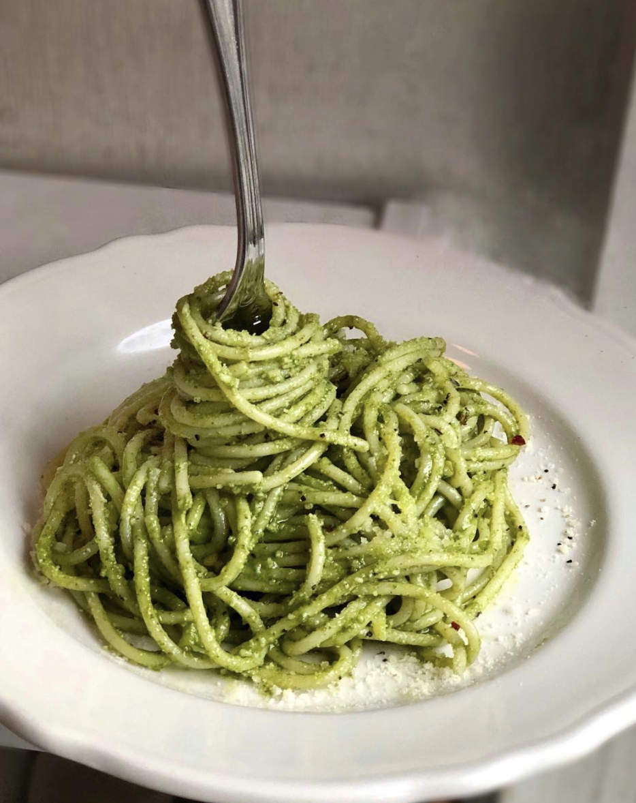
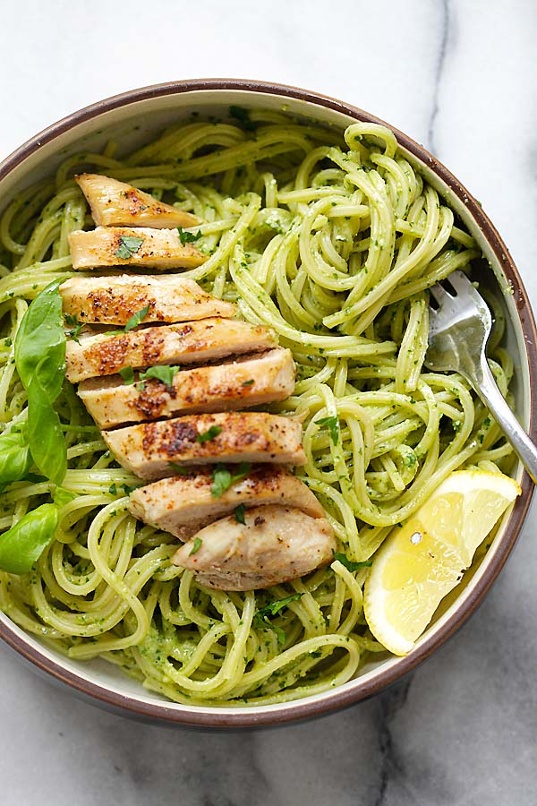
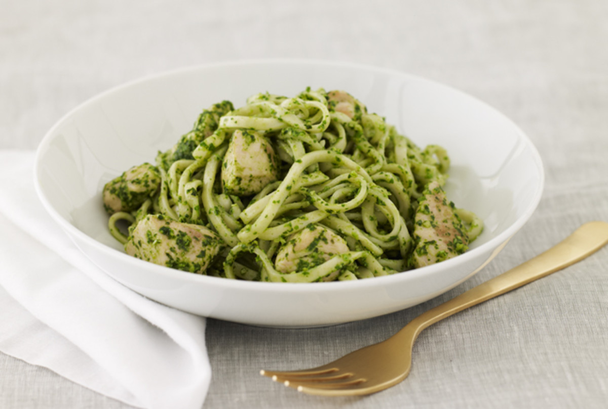
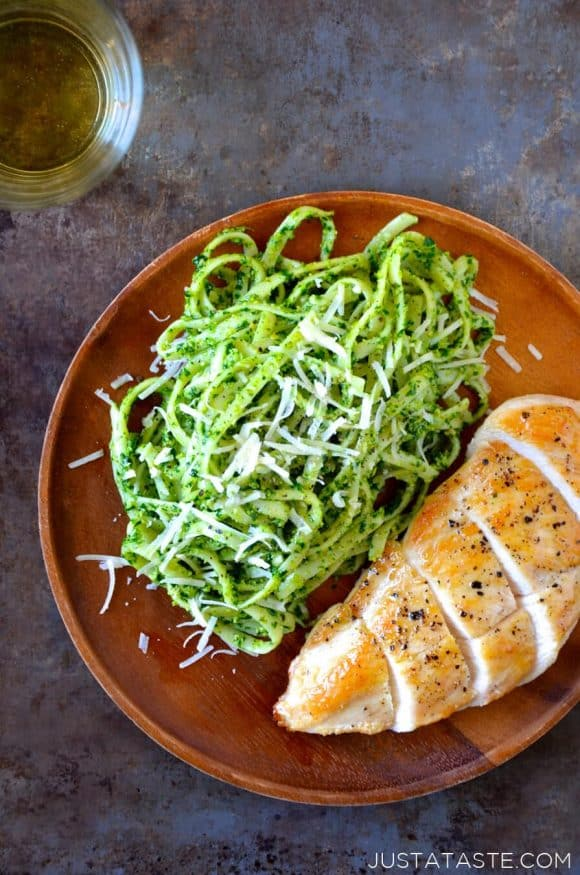

Pesto and Chicken Linguine

Not only is this dish garanteed to be a crowd pleaser, but it can whipped up with the utmost ease and in less than 30 minutes,which means one thing for you, more time with your family and friends.
Ingredients
- 1 pound linguine
- 2 chicken breasts,sliced
- 1 cup pesto
- 2 tablespoons olive oil
- 1/2 cup parmesan cheese,finely grated
- salt and pepper to taste
Homemade Pesto
- 3 cups basil leaves
- 3 tablespoons pine nuts
- 3 garlic cloves
- 1 teaspoon oregano
- 2/3 cup grated parmesan cheese
- 2/3 cup olive oil
- salt and pepper
Directions
- For the pesto:: Combine all pesto ingredients exept for the olive oil in a food blender. Blend until mixed and smooth. With the motor running, add olive oil in a slow stream until combined. Pesto should not be too soupy or fine.
- For the pesto chicken: Preheat oven to 450'F.
- Bring a medium sized pot of water to a boil. Add a dash of olive oil and a pinch of salt and cook pasta until al dente. Once the pasta is done, strain well and set aside.
- Meanwhile, heat 1 tablespoon of olive oilin a large cast iron skillet over a medium-high heat. Slice the chicken into bite sized strips, season liberally with salt and pepper and cook through.
- Turn the heat down to low and add the strained pasta. Stir in one cup of pesto and toss until fully coated. Top with fresh parmesan and bake for 5 minutes or until cheese has fully melted. Serve immediately.

Nutrition Facts
| Nutrional Facts |
| Calories |
328 |
| Fat |
10.1g |
| Carbohydrates |
43.3g |
| Protein |
17.4g |
| Cholesterol |
22mg |
| Sodium |
154mg |


My Biography
My name is Zintle and I was born and bred in Cape Town. I currently live in Khayelitsha with my parents and 2 siblings, here in Khayelitsha and my mother's kitchen is where I found my love for cooking,not forgetting tasting, and all things culnery. Come along with me on this magical journey where we explore new and exciting recipes garanteed to make you look like a winner,everytime.
computer